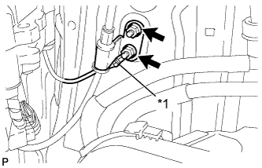
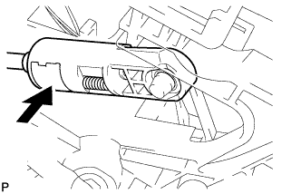

TRANSMISSION CONTROL CABLE > INSTALLATION |
| 1. INSTALL TRANSMISSION CONTROL CABLE ASSEMBLY |
Insert the transmission control cable from the outside of the vehicle and attach the 3 claws of the cable retainer.
Install the 2 nuts.
Connect the transmission control cable to the transmission control cable bracket with a new clip and connect the cable end to the control shaft lever with the nut.
|  |
Connect the transmission control cable support and ground cable with the 2 nuts.
| *1 | Ground Cable |
Turn the socket of the transmission control cable 180° counterclockwise. While holding the socket in place, push in the lock piece until the lock piece clicks twice.
| *1 | Socket | *2 | Lock Piece |
| *a | Push in | - | - |
Install the outer part of the transmission control cable to the shift lever retainer. Check that the socket and lock piece are in their original positions.
| *1 | Shift Lever Retainer | - | - |
 |
Slide the slider in the direction shown in the illustration and pull out the lock piece.
| *1 | Slider |
| *2 | Lock Piece |
 |
Connect the end of the cable to the shift lever.
|  |
Push the lock piece into the adjuster case and lock it.
| 2. INSTALL REAR CONSOLE BOX ASSEMBLY |
Install the console box (Click here).